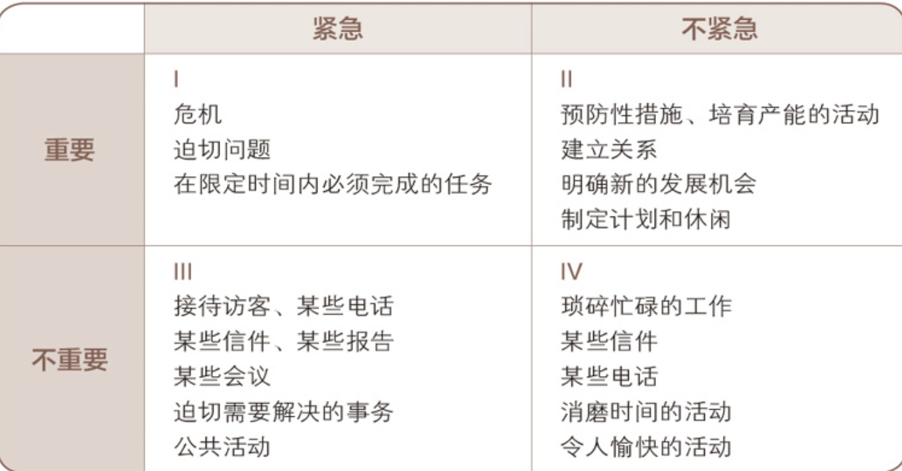
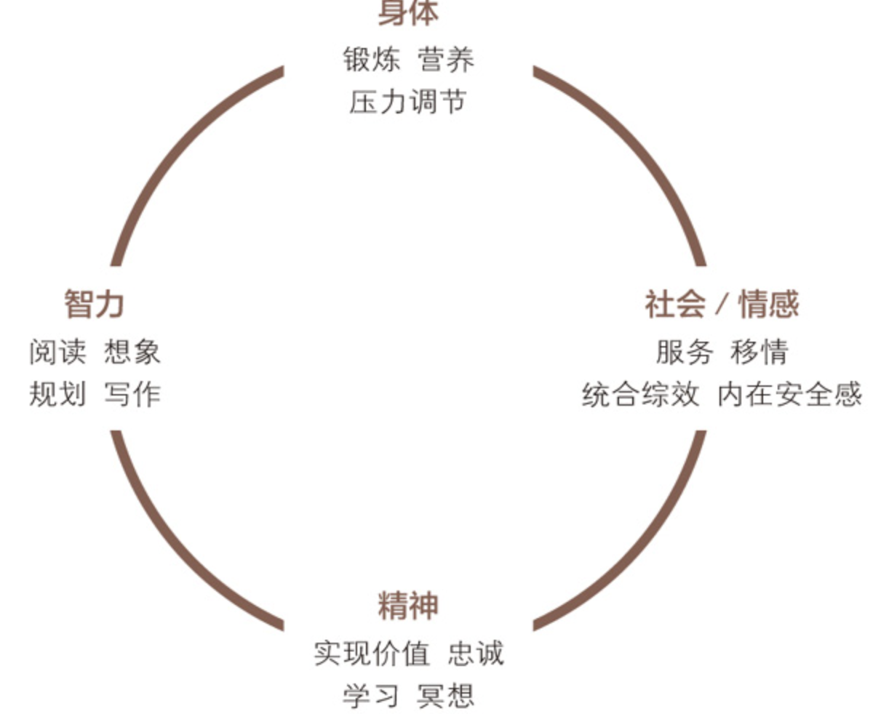

Intro
思维的原则
- 改变对世界的看法
每个人的思维方式都是那么根深蒂固，仅仅研究世界是不够的，还要研究我们看世界时所戴的“透镜”，因为这透镜（即思维方式）往往左右着我们对世界的看法。
因此，要改变现状，首先要改变自己；要改变自己，先要改变我们对问题的看法。
- 品德 vs 个人魅力
第一次世界大战后不久，人们对成功的基本观念改变了。由重视“品德”转而强调“个人魅力（Personality Ethic）”，即认为成功与否更多取决于性格、社会形象、行为态度、人际关系以及长袖善舞的圆熟技巧。这种思潮朝两大方向发展：一是注重人际关系与公关技巧；二是鼓吹盲目积极乐观（PMA）。
或许我们在前人的基础上施展个人能力时，太过注重造就自己，却忽略了前人基础的支撑；也或许我们习惯坐享其成，遗忘了耕耘的必要。即使我可以玩弄手段使他人投我所好，为我卖力，因我发奋，和我“惺惺相惜”，然而一旦我品德有缺陷——比如言不由衷、虚情假意，就无法获得长远的成功。因为言不由衷难免遭人怀疑，任何行事都会被视为别有用心，就算所谓的人际关系技巧也无济于事。任凭你巧舌如簧或动机纯良，只要没有或者缺乏信任感，就不要说什么永久的成功。只有心存善念，才能赋予人际关系技巧以生命。
- 思维方式的力量
“Paradigm （思维方式）”这个词来自希腊文，最初是一个科学名词，现在多用来指某种理论、模型、认知、假说或参考框架。但广义上是指我们“看”世界的方法，这种“看”和视觉无关，主要指我们的感知、理解与诠释。
思维方式就像地图。你可以改变行为，比如更努力，更勤奋，更迅速，但是这种努力只会让你更快地到达错误的地点。你还可以改变态度，比如更加积极地思考，但你仍然到不了正确的地点。或许你并不在乎，因为你抱着积极的态度，不管到了哪里你都高兴。但关键是，你还是走错路了。根本问题不在于你的行为和态度，而在于那张错误的“地图”。
- 成长和改变的原则
现在我们会遇到这样一种人，他们不了解也不理解自己，他们只知道别人眼中的自己应该是什么样子。他们不再健谈，取而代之的是闲聊；他们不再开怀大笑，取而代之的是挤出的笑容；他们抛却真切的痛苦，取而代之的是无聊的绝望。两句话概括：这种缺陷已经导致他们丧失了天性与个性；他们从本质上来说已经和其他人别无二致。
人的一生包含了许多成长和进步阶段，必须循序渐进。
七个习惯概论
习惯
习惯是“知识”、“技巧”与“意愿”相互交织的结果。
知识是理论范畴，指点“做什么”及“为何做”；技巧告诉我们“如何做”；意愿促使“想要做”。要养成一种习惯，三者缺一不可。
人类成长的三个阶段，分别为依赖期、独立期、互赖期：
- 依赖期（Dependence）以“你”为核心——你照顾我；你为我的得失成败负责。
- 独立期（Independence）以“我”为核心——我可以做到；我可以负责；我可以靠自己；我有权选择。
- 互赖期（Interdependence）以“我们”为核心——我们可以做到；我们可以合作；我们可以融合彼此的智慧和能力，共创前程。
效能
效能在于产出与产能的平衡。
- 农夫有了一只生金蛋的鹅，每天去取一只金蛋，金蛋就是“产出”，下金蛋的鹅就是“产能”。农夫贪得无厌，想要一次性获得所有金蛋，杀鹅取卵，可是鹅的肚子里并没有金蛋，反而失去了可以下金蛋的鹅。
人类所拥有的资产，基本上可分为物质资产、金融资本以及人力资本三大类：
- 急功近利常常会毁掉宝贵的物质资产。
- 有多少人本息不分，或者为了改善生活水平（获得更多的金蛋）而动用本金？
- 假设夫妻双方都只顾满足自己的需要，享受权益，却不注意维护感情的纽带，即权益的来源，生活中毫无热情、体贴可言，长此以往，爱情、热情、柔情都会渐渐消退。
对于团队来说也是如此，如果一个团体的成员在利用物质资产时，不遵守产出与产能平衡的原则，便会降低整个团体的效能，最终导致鹅的死亡。
关于本书的使用方法
谁也无法说服他人改变，因为我们每个人都守着一扇只能从内开启的改变之门，不论动之以情或晓之以理，我们都不能替别人开门。
——美国作家弗格森（Marilyn Ferguson）
对自己的改变要有耐心，因为自我成长是神圣的，同时也是脆弱的，是人生中最大的投资。虽然这需要长时间下功夫，但是必定会有鼓舞人心的可喜成效。
可疑之利不可收，得之易时失之易。
——《雍正王朝》邬思道
高效能人士的七个习惯
习惯一：积极主动（BE PROACTIVE）
积极主动即采取主动，为自己过去、现在及未来的行为负责，并依据原则及价值观，而非情绪或外在环境来下决定。积极主动的人是改变的催生者，他们摒弃被动的受害者角色，不怨天尤人，发挥了人类四项独特的禀赋——自我意识、良知、想象力和独立意志，同时以由内而外的方式来创造改变，积极面对一切。他们选择创造自己的人生，这也是每个人最基本的决定。
习惯二：以终为始（BEGIN WITH THE END IN MIND）
所有事物都经过两次的创造——先是在脑海里酝酿，其次才是实质的创造。个人、家庭、团队和组织在做任何计划时，均先拟出愿景和目标，并据此塑造未来，全心投入自己最重视的原则、价值观、关系及目标。对个人、家庭或组织而言，使命宣言可以说是愿景的最高形式，它是根本的决策，主宰了所有其他决定。领导工作的核心，就是基于共有的使命、愿景和价值观，创造出一个文化。
习惯三：要事第一（PUT FIRST THINGS FIRST）
要事第一即实质的创造，是梦想（你的目标、愿景、价值观及要事处理顺序）的组织与实践。次要的事不必摆在第一，要事也不能放在第二。无论迫切性如何，个人与组织均要更多聚焦要事，重点是，把要事放在第一位。
习惯四：双赢思维（THINK WIN-WIN）
双赢思维是一种基于互敬、寻求互惠的思考框架与心意，目的是分享更多的机会、财富及资源，而非敌对式竞争。双赢既非损人利己（赢输），亦非损己利人（输赢）。我们的工作伙伴及家庭成员要从互赖式的角度来思考（“我们”，而非“我”）。双赢思维鼓励我们解决问题，并协助个人找到互惠的解决办法，是一种资讯、力量、认可及报酬的分享。
习惯五：知彼解己（SEEK FIRST TO UNDERSTAND, THEN TO BE UNDERSTOOD）
当我们不再急切回答，改以诚心去了解、聆听别人，便能开启真正的沟通，增进彼此关系。对方获得理解后，会觉得受到尊重与认可，进而卸下心理防备，坦然交谈，双方对彼此的了解也就更顺畅自然。知彼需要仁慈心，解己需要勇气，能平衡两者，则可大幅提升沟通的效率。
习惯六：统合综效（SYNERGIZE）
统合综效谈的是创造第三种选择，即非按照我的方式，亦非遵循你的方式，而是创造第三种更好的办法。它是互相尊重的成果——不但了解了彼此，甚至还称赞彼此的差异，欣赏对方解决问题及把握机会的手法。个人的力量是团队和家庭统合综效的基础，能使整体获得一加一大于二的成效。实践统合综效的人际关系和团队会扬弃敌对的态度（1+1＝1/2），不以妥协为目标（1+1＝11/2），也不仅仅止于合作（1+1＝2），他们要的是创造式的合作（1＋1＞2）。
习惯七：不断更新（SHARPEN THE SAW）
“不断更新”谈的是，如何在四个生活基本面（身体、精神、智力、社会/情感）中，不断更新自己。这个习惯提升了其他六个习惯的实施效率。对组织而言，习惯七提供了愿景、更新及不断的改善，使组织不至呈现老化及疲态，并迈向新的成长之路。对家庭而言，习惯七通过固定的个人及家庭活动，使家庭效能升级，就像建立传统，使家庭日新月异，即是一例。
低效能人士的七个习惯
习惯一：消极被动
把所有问题的矛头都指向讨人厌的老板、父母、基因、配偶、伴侣、前任、经济、政府，或者其他方面。受害者心理。不对自己的人生负责。如果你感到饥饿，就去吃饭。如果你感到愤怒，就去发泄。如果有人对你说粗话，就怼回去。消极被动。
习惯二：漫无目的
没有计划。没有目标。不会担心自己的行为带来的后果。随波逐流。及时行乐，做个玩世不恭者，因为也许明天就会死去。
习惯三：要事最后拖延。总是先做紧急的事情，比如手机一响就去回复，然后再做重要的事情。不会担心透支情感账户，反正他们总会在身边。为什么要运动？一直很健康。一定要保证每天有足够的时间看各种视频。
习惯四：你输我赢思维
把生活当成痛苦的竞赛。别人就是为了取代自己，所以只好先取代他们。不让别人获得成功，如果他们赢了，自己就输了。如果你好像要输了，一定要拉一个垫背的。
习惯五：先谈论，再倾听人生来就长着嘴巴，一定要物尽其用。多多谈论。确保每个人首先要明白自己的观点；然后，如果情况使然，不得不假装听听别人的话，就用“嗯嗯”回应，脑子里思考的是午饭吃什么。或者如果你真的想知道别人的想法，就把这个机会给他们。
习惯六：成为一座孤岛直面现实吧，其他人那么奇怪是因为他们和你不同，那为什么还要和他们相处？团队合作耗时耗力。合作会把所有进度拖慢，干脆放弃。你已经有了最棒的想法，自己一个人干就很好了。我就是我，一座特别的岛屿。
习惯七：耗尽一切
开车太专注，没有时间加油。生活太忙碌，没有时间充电和更新。不学习新知识。像躲避瘟疫一样逃避运动。老天有眼，不要看那些好书，欣赏自然、艺术、音乐或其他能够点燃你激情的东西。燃烧热情吧，耗尽一切。
习惯一 积极主动
决定论
如果我们仅仅通过“社会之镜”（Social Mirror），即时下盛行的社会观点以及周围人群的意见、看法和思维方式来进行自我认知，那无异于从哈哈镜里看自己。
人性的三种“决定论”：
- 基因决定论（Genetic Determinism）：认为人的本性是祖先遗传下来的。
- 心理决定论（Psychic Determinism）：强调一个人的本性是由父母的言行决定的。
- 环境决定论（Environmental Determinism）：主张环境决定人的本性。
但是这三种决定论都是以“刺激—回应”理论为基础，其基本观点就是认为我们会受条件左右，以某一特定方式回应某一特定刺激。
可人类具有特殊的四种天赋，赋予人类选择自由：
- 自我意识（Self-awareness）：即个人头脑的想法和观念。
- 想象力（Imagination）：即超越当前现实而在头脑中进行创造的能力。
- 良知（Conscience）：即明辨是非，坚持行为原则，判断思想、言行正确与否的能力。
- 独立意志（Independent Will）：即基于自我意识、不受外力影响而自行其是的能力。
人类独有的能力让以上三种“决定论”都不那么能决定一个人能成为的样子。
积极主动 vs 消极被动
积极主动不仅指行事的态度，还意味着人一定要对自己的人生负责。个人行为取决于自身的抉择，而不是外在的环境，人类应该有营造有利的外在环境的积极性和责任感。
责任感（Responsible），从构词法来说是能够回应（Response-able）的意思，即选择回应的能力。所有积极主动的人都深谙其道，因此不会把自己的行为归咎于环境、外界条件或他人的影响。他们根据价值观，有意识地选择待人接物的方式，不会因为外界因素或一时情绪而冲动行事。
积极主动是人类的天性，即使生活受到了外界条件的制约，那也是因为我们有意或无意地选择了被外界条件控制，这种选择称为消极被动（Reactive）。
积极主动的人理智胜于冲动，他们能够慎重思考，选定价值观并将其作为自己行为的内在动力；而消极被动的人则截然相反，他们感情用事，易受环境或条件作用的驱使。
除非你愿意，否则没人能伤害你。
——埃莉诺·罗斯福
关注圈 & 影响圈
每个人都有格外关注的问题，比如健康、子女、事业、工作、国债或核战争等等，这些都可以被归入“关注圈”（Circle of Concern），以区别于自己没有兴趣或不愿理会的事物。
关注圈内的事物，有些可以被掌控，有些则超出个人能力范围，前者可以被圈成一个较小的“影响圈”（Circle of Influence）。
积极主动的人专注于“影响圈”，他们专心做自己力所能及的事，他们的能量是积极的，能够使影响圈不断扩大。
反之，消极被动的人则全神贯注于“关注圈”，紧盯他人弱点、环境问题以及超出个人能力范围的事不放，结果越来越怨天尤人，一味把自己当作受害者，并不断为自己的消极行为寻找借口。错误的焦点产生了消极能量，再加上对力所能及之事的忽略，就造成了影响圈日益缩小。
只要我们的焦点在关注圈，就等于是允许自己受制于外界条件，自然就不会主动采取必要措施来推动积极变化。
直接控制 / 间接控制 / 无法控制
我们面对的问题可以分为三类：
- 可直接控制的问题：可以通过培养正确习惯来解决，这显然在影响圈范围内。
- 可间接控制的问题：可以通过改进施加影响的方法来解决，例如采取移情方式而不是针锋相对，以身作则而不是口头游说。
- 无法控制的问题：我们要做的就是改变面部曲线，以微笑、真诚与平和来接受现实。纵使有再多不满，也要学着泰然处之，这样才不至于被问题左右。
God, grant me the serenity
to accept the things I cannot change,
the courage to change the things I can,
and the wisdom to know the difference.
Living one day at a time,
enjoying one moment at a time;
accepting hardship as a pathway to peace;
taking, as Jesus did,
this sinful world as it is,
not as I would have it;
trusting that You will make all things right
if I surrender to Your will;
so that I may be reasonably happy in this life
and supremely happy with You forever in the next.Amen.
——Reinhold Niebuhr
面对错误
人的一生中，错误的选择在所难免，其后果让人悔不当初，却又无能为力，于是想象着如果再有一次机会，必会另作他选，这是值得我们深思的第二件事。
对于已经无法挽回的错误，积极主动的人不是悔恨不已，而是承认往日错误已属关注圈的事实，那是人力无法企及的范畴，既不能从头来过，也不能改变必然后果。
信守诺言
承诺也是成长的精髓。自我意识与良知的天赋让我们能够自我检讨，发现有待改进的地方、有待发挥的潜能以及有待克服的缺点，然后想象力与独立意志的天赋会配合自我意识，帮我们做出承诺，确立目标，矢志达成。
由此就找到了两种能够直接掌控人生的途径：一是做出承诺，并信守诺言；二是确立目标，并付诸实践。
习惯二 以终为始
以终为始的定义
以终为始，即在做任何事之前，都要先认清方向。
现在请认真想一想，你希望人们对你以及你的生活有什么样的评价？以终为始最基本的应用，是应该从现在开始，以你的人生目标作为衡量一切的标准，你的一言一行，一举一动，无论发生在何时，都必须遵循这一原则，即由个人最重视的期许或价值观来决定一切。牢记自己的目标或者使命，就能确信日常的所作所为并非与之南辕北辙，并且每天都向着这个目标努力，不敢懈怠。
两次创造
“以终为始”的一个原则基础是“任何事都是两次创造而成”。我们做任何事都是先在头脑中构思，即智力上的或第一次的创造（Mental/First Creation），然后付诸实践，即体力上的或第二次的创造（Physical/Second Creation）。
“第一次的创造”未必都经过有意识的设计。有些人自我意识薄弱，不愿主动设计自己的生活，结果就让影响圈外的人或事控制了自己，其生活轨迹屈从于家庭、同事、朋友或环境的压力。这类剧本大多源自个人喜好，不符合客观原则，之所以会被接受，那是因为某些人内心脆弱，依赖心理过重，渴望被接纳和获得归属感，向往他人的关怀和爱护，而且一定要让别人来肯定自己的价值和重要性。
自我领导
“以终为始”的另一个原则基础是自我领导，但领导（Leadership）不同于管理（Management）。领导是第一次的创造，必须先于管理；管理是第二次的创造，具体会在习惯三中谈到。
领导与管理就好比思想与行为。管理关注基层，思考的是“怎样才能有效地把事情做好”；领导关注高层，思考的是“我想成就的是什么事业”。
“管理是正确地做事，领导则是做正确的事。”
个人宣言
以终为始最有效的方法，就是撰写一份个人使命宣言，即人生哲学或基本信念。宣言主要说明自己想成为怎样的人（品德），成就什么样的事业（贡献和成就）及为此奠基的价值观和原则。
可以把个人使命宣言称为个人宪法。对于个人来说，基于正确原则的个人使命宣言也同样是评价一切的标准，成为我们以不变应万变的力量源泉。它既是做出任何关键抉择的基础，也是在千变万化的环境和情绪下做出日常决策的基础。
核心区
制订个人使命宣言必须从影响圈的核心开始，基本的思维方式就在这里，即我们用来观察世界的“透镜”。这个核心还是安全感、人生方向、智慧与力量的源泉。
- “安全感”（Security）：代表价值观、认同、情感的归属、自尊自重与拥有个人的基本能力。
- “人生方向”（Guidance）：是“地图”和内心的准绳，人类以此为解释外界事物的理据以及决策与行为的原则和内在标准。
- “智慧”（Wisdom）：是人类对生命的认知、对平衡的感知和对事物间联系的理解，包括判断力、洞察力和理解力，是这些能力的统一体。
- “力量”（Power）：则指采取行动、达成目标的能力，它是做出抉择的关键性力量，也包括培育更有效的习惯以替代顽固旧习的能力。
它们相辅相成——安全感与明确的人生方向可以带来真正的智慧，智慧则能激发力量。若四者全面均衡，且协调发展，便能培养高尚的人格、平和的性格与完美的个体。
生活中心
人人都有生活中心，以配偶为中心，以家庭为中心，以金钱为中心，以工作为中心，以名利为中心，以享乐为中心，以敌人或朋友为中心，以宗教为中心，以自我为中心。
一般说来，我们的生活中心是以上某几种中心的混合体，依环境不同而有所变化。生活中心如此摇摆不定，情绪上难免起起落落。一会儿意气风发，一会儿颓唐沮丧；一会儿斗志昂扬，一会儿又落魄消沉。缺乏固定的人生方向，没有持久的智慧，也没有稳定的力量或自我评价。
所以，最理想的状况还是建立清晰明确的生活中心，由此才能产生高度的安全感、人生方向、智慧和力量，使人生更积极、更和谐。
以正确原则为生活中心可以为发展前述四个支撑人生的因素奠定坚实的基础。当然，我们也并非无所不知。我们对正确原则的认识和理解受限于我们对自己和世界本质的了解，也受到时下流行的与原则相背离的哲学和理论的影响。我们的局限性是可以逐步改善的。理解成长的原则可以让我们在寻找正确原则的时候充满自信，相信学得越多，就越能以正确的视角更清楚地观察世界。原则不会改变，但我们对原则的理解可以改变。
习惯三 要事第一
独立意志 & 有效管理
独立意志指的是做出决定和主动选择，并根据这些决定和选择采取具体行动的能力。有了独立意志，我们就可以主动作为，而不是被动听命。
有效的管理指的就是要事第一，先做最重要的事情。领导者首先要决定的，就是哪些事情是重要的；而作为管理者，就是要将这些重要的事务优先安排。从这个意义上说，自我管理的实质就是自律和条理，是对计划的实施。
时间管理理论的演进
间管理理论也可分为四代：
- 第一代理论着重利用便条与备忘录，在忙碌中调配时间与精力。
- 第二代理论强调行事历与日程表，反映出时间管理已注意到规划未来的重要。
- 第三代是目前正流行、讲求优先顺序的观念。也就是依据轻重缓急设定短、中、长期目标，再逐日订立实现目标的计划，将有限的时间、精力加以分配，争取最高的效率。第三代时间管理法有它可取的地方。但也有人发现，过分强调效率，把时间崩得死死的，反而会产生反效果，使人失去增进感情、满足个人需要以及享受意外惊喜的机会。
- 现在，又有第四代理论出现。与以往截然不同之处在于，它根本否定“时间管理”这个名词，主张关键不在于时间管理，而在于个人管理。与其着重于时间与事务的安排，不如把重心放在维持产出与产能的平衡上。
第四代理论即时间管理矩阵：
- 第一象限：紧急且重要
- 第二象限：不紧急但重要
- 第三象限：紧急不重要
- 第四象限：不紧急且不重要

紧急之事通常都显而易见，推拖不得；也可能较讨好、有趣，却不一定很重要。重要性与目标有关，凡有价值、有利于实现个人目标的就是要事。一般人往往对燃眉之急立即反应，对当务之急却不尽然，所以更需要自制力与主动精神，急所当急。
第一象限事务既紧急又重要，需要立即处理，通常被称为“危机”或“问题”。有人觉得，这类事务会消耗大部分的时间和精力，他们整天都在处理危机，满脑子都是问题，忙于应付各种紧迫任务。如果你过分注重第一象限事务，那么它们的范围就会变得越来越大，最终占据你全部的时间和精力。
还有一些人将大部分时间花在紧急但并不重要的第三象限事务上，却自以为在致力于第一象限事务。他们整天忙于应付自认为十分重要的紧急事件，殊不知紧急之事只是别人的要事，对别人重要，对自己就不一定了。
有些人几乎将所有的时间都用在第三和第四象限事务上，可以说他们过的是一种不负责任的生活。高效能人士总是避免陷入第三和第四象限事务，因为不论是否紧急，这些事情都是不重要的，他们还通过花费更多时间在第二象限事务来减少第一象限事务的数量。
第二象限事务包括建立人际关系、撰写使命宣言、规划长期目标、防患于未然等等。人人都知道这些事很重要，却因尚未迫在眉睫，反而避重就轻。高效能人士的脑子里装的不是问题，而是机会。他们不会在各种各样的问题上浪费时间和精力，他们的思维方式是预防型的，总是能够做到防患于未然。当然，他们也有真正意义上的危机和紧急事件需要马上处理，但是这类事件的数量相对来说很少。他们能够平衡产出和产能的关系，将时间和精力集中在重要但是并不紧急的事务上，即第二象限事务，完成这些活动能够提高个人的处事能力。
第四代时间管理方法六标准
以第二象限事务为生活中心的时间管理方法只有一个目标，那就是有效地管理生活。让第二象限事务成为生活中心的有效工具必须满足以下六个重要标准：
- 和谐一致：个人的理想与使命、角色与目标、工作重点与计划、欲望与自制之间，应和谐一致。
- 平衡功能：管理方法应有助于生活平衡发展，提醒我们扮演不同的角色，以免忽略了健康、家庭、个人发展等重要的人生层面。有人以为某方面的成功可补偿其他方面的遗憾，但那终非长久之计。
- 围绕中心：理想的管理方法会鼓励并协助你，注重于虽不紧急却极重要的事。最有效的方法是以一星期为周期制订计划。一周7天中，每天各有不同的优先目标，但基本上7天一体，相互呼应。如此安排人生，秘诀在于不要就日程表订立优先顺序，应就事件本身的重要性来安排行事。
- 以人为本：个人管理的重点在人，不在事。行事固然要讲求效率，但以原则为中心的人更重视人际关系的得失。因此有效的个人管理偶尔须牺牲效率，迁就人的因素。毕竟日程表的目的在于协助工作，并不是要让我们为进度落后而产生内疚感。
- 灵活变通：管理方法并非一成不变，视个人作风与需要而调整。
- 便于携带：管理工具必须便于携带，随时可供参考修正。
自我管理四步骤
确认角色：第一步就是要写出你自己的关键角色。如果你还没有认真思考过这个问题，那么可以把自己想到的先记下来。作为一个个体，你有属于自己的各种角色。你可以先写下自己在家庭中的角色：丈夫或妻子、父亲或母亲、儿子或女儿，大家族中的祖父母、外祖父母、叔舅、姨婶或者表堂兄弟姐妹等等。然后再写下自己在工作中的角色，列举自己想要持续投入时间和精力去做的一些事情，还可以将自己在教会或者社区事务中的角色也写出来。
选择目标：第二步就是思考下一个周计划中每一任务栏下你最想做的一两件要事，作为你选定的目标。这些目标中一定要有几个第二象限事务，最好让这些短期目标与使命宣言中的长期目标相关联。即使你还没有撰写个人使命宣言，也可以根据自己的感觉来判断每个角色中哪些事情是比较重要的，并为每个角色确立一或两个目标。
安排进度：第三步是为每一项目标安排具体的实施时间。如果你的目标是起草自己的个人使命宣言，那就不妨在星期天安排两个小时专门做这件事情。确认角色并制定目标后，你就可以把每项任务分配到一个星期中某个具体的日子去做了。或者将它列为一项重要活动，或者列为一个特别约会。
每日调整：使用这种以第二象限事务为中心的周计划之后，你就会发现原来的每日计划变成了每日调整，即根据突发事件、人际关系的意外发展及崭新机会对每天的要务安排进行适当调整。
付诸实践
顺从别人的意愿，完成他人眼中的要务，或无牵无挂地享受既不紧张又不重要的活动，岂不轻松愉快？至于执行自己依理性原则设计出的程序，则或多或少考验着自制力，此时就得靠诚心正意的修养功夫，坚定意志。
俗语说：“天有不测风云，人有旦夕祸福。”事先安排妥当的行事表，必要时仍须有所变更。只要把握原则，任何调整都可以心安理得。
对人不可讲效率，对事才可如此。对人应讲效用，即某一行为是否有效。
第四代个人管理理论的特点，在于承认人比事更重要。而芸芸众生中，首要顾及的便是自己。
勇于说不
若要专注于要务，就得排除次要事务的牵绊，此时需要有说“不”的勇气。
人各有志，各有优先要务。必要时，应该不卑不亢地拒绝别人，在紧急与重要之间，知道取舍。
插曲 人际关系的本质
良好人际关系的基础是自制与自知之明。有人说，爱人之前，必须先爱自己。此言果然不虚，但是我更强调人贵知己。了解自我才懂得分寸，也才能真正爱护自己。
独立是互赖的基础。缺乏独立人格，却一味玩弄人际关系的技巧，纵使得逞于一时，也不过是运气罢了。
维系人与人之间的情谊，最要紧的不在于言语或行为，而在于本性。
修身是公众领域成功的基础。
我们都知道银行账户就是把钱存进去，作为储蓄，以备不时之需。情感账户里储蓄的是人际关系中不可或缺的信任，是人与人相处时的那份安全感。越是持久的关系，越需要不断的储蓄。由于彼此都有所期待，原有的信赖很容易枯竭。
情感账户的七种主要的投资方式：
- 理解他人
- 注意小节
- 信守承诺
- 明确期望
- 正直诚信
- 勇于致歉
- 无条件的爱
习惯四 双赢思维
人际交往的六种模式
- 利人利己（双赢）
- 两败俱伤（输/输）
- 损人利己（赢/输）
- 独善其身（赢）
- 舍己为人（输/赢）
- 好聚好散（无交易）
最好的选择必须依情况而定，关键是认清形势，不要教条地把某一种模式应用于每一种情况。
不能双赢就好聚好散。在相互依赖的环境里，任何非双赢的解决方案都不是最好的，因为它们终将对长远的关系产生这样那样的不利影响。
双赢思维的五个要领
双赢的原则是所有人际交往的基础，包括五个独立的方面：
- “双赢品德”是基础：双赢品德有三个基本特征，诚信，成熟和知足。
- 接着建立起“双赢关系”：双赢的精髓就是信用，即情感账户。没有信用，我们最多只能妥协；缺乏信用，我们就无法开诚布公，彼此学习，互相交流和发挥创造性。
- 由此衍生出“双赢协议”：它让纵向交往转为水平交往，从属关系转为合作关系，上级监督转为自我监督。
- 需要“双赢体系（结构）”作为培育环境。
- 通过双赢的“双赢过程”来完成。
习惯五 知彼解己
移情聆听
读、写、听、说是最基本的沟通方式。沟通是生活中最重要的技能。人们在清醒时的大多数时间都在交流。但是从小到大，我们接受的教育多偏向读写的训练，说也占其中一部分，可是从来没有人教导我们如何去听。然而听懂别人说话，尤其是从对方的立场去聆听，实在不是件容易事。
想养成真正有效的人际沟通习惯，就不能单靠技巧。首先你要有能让他人信任和开怀的人格，在此基础上培养移情聆听（Empathic Listening）的技巧，然后建立情感账户来实现心与心的交流。
“知彼”是交往模式的一大转变，因为我们通常把让别人理解自己放在首位。大部分人在聆听时并不是想理解对方，而是为了做出回应。这种人要么说话，要么准备说话，不断地用自己的模式过滤一切，用自己的经历理解别人的生活。“是的，我知道你的感受。”“我也有过类似的经历，我的经验是……”他们总是把自己的经验灌输给别人，用自己的眼镜给每一个人治疗。
事实上，大部分人都是这么自以为是。我们的聆听通常有层次之分。一是充耳不闻，压根就不听别人说话；二是装模作样，“是的！嗯！没错！”；三是选择性接收，只听一部分，通常学龄前儿童的喋喋不休会让我们采取这种方式；四是聚精会神，努力听到每一个字。但是，很少有人会达到第五个层次，即最高层次——移情聆听。
移情聆听是指以理解为目的的聆听，要求听者站在说话者的角度理解他们的思维方式和感受。移情（Empathy）不是同情（Sympathy）。后者是一种认同和判断形式，更适合用来表达感情和做出回应，却容易养成对方的依赖性。移情聆听的本质不是要你赞同对方，而是要在情感和理智上充分而深入地理解对方。
四种自传式回应
自以为是的人往往会有四种“自传式回应”（Autobiographical Response）的倾向：
- 价值判断——对旁人的意见只有接受或不接受。
- 追根究底——依自己的价值观探查别人的隐私。
- 好为人师——以自己的经验提供忠告。
- 自以为是——根据自己的行为与动机衡量别人的行为与动机。
有效的沟通
第一阶段是复述语句，这至少能使人专心聆听。
子：“上学真是无聊透了！”父：“你已受不了了，觉得上学太无聊。”
第二阶段加入解释，完全用自己的词句表达，但仍用左脑的逻辑思维去理解。
父：“你不想上学了。”
第三阶段掺入个人的感觉，右脑发挥作用。此时听者所注意的已不止于言语，也开始体会对方的心情。
父：“你觉得很有挫折感。”
第四阶段是既加以解释，又带有感情，左右脑并用。
父：“你对上学有很深的挫折感。”
表达也要讲技巧
成熟在前文被定义为能掌控勇气和关心之间的平衡。了解别人固然重要，但我们也有义务让自己被人了解，这通常需要相当的勇气。双赢需要熟练地掌握勇气和关心，因此合作的环境下更需要让人了解自己。
古希腊人有一种很经典的哲学观点，即品德第一，感情第二，理性第三。品德指的是你个人的可信度，是人们对你的诚信和能力的认可，是人们对你的信任，是你的情感账户。感情指的是你的移情能力，是感性的，说明你能通过交流迅速理解他人的情感。理性是你的逻辑能力，即合理表达自己的能力。
当你清晰、具体地表达想法，最为重要的是，在理解别人思路和担忧的前提下表达，那么可信度会大大增加。表达自己并非自吹自擂，而是根据对他人的了解来诉说自己的意见，有时候甚至会改变初衷。因为在了解别人的过程中，你也会产生新的见解。
习惯六 统合综效
统合综效就是整体大于部分之和，也就是说各个部分之间的关系也是整体的一个组成部分，但又不仅仅是一个组成部分，而是最具激发、分配、整合和激励作用的部分。
统合综效的精髓就是判断和尊重差异，取长补短。与人合作最重要的是，重视不同个体的不同心理、情绪与智能，以及个人眼中所见到的不同世界。自以为是的人总以为自己最客观，别人都有所偏颇，其实这才是画地为牢。反之，虚怀若谷的人承认自己有不足之处，而乐于在与人交往中汲取丰富的知识见解，重视不同的意见，因而增广见闻。此所谓“三人行，必有我师焉”。
所谓统合综效的沟通，是指敞开胸怀，接纳一切奇怪的想法，同时也贡献自己的见地。
习惯七 不断更新
自我提升和完善的四个层面
习惯七就是个人产能。它保护并优化你所拥有的最重要的资产——你自己。它从四个层面更新你的天性，那就是：身体、精神、智力、社会/情感。
身体层面指有效呵护我们的身体——健康饮食，充足休息以及定期锻炼。锻炼属于第二象限事务，但是由于不具紧急性，因此很少人能坚持不懈，结果终有一天我们会发现自己陷入了第一象限事务，不得不面对健康问题和危机，而原因正是之前对锻炼的忽视。锻炼的目的是提升自己的耐力、韧性和力量。耐力：源于有氧运动，靠的是心血管功能——即心脏向全身供血的能力，快走、跑步、骑车、游泳、越野、滑雪和慢跑对身体大有益处。韧性：源于伸展运动。很多专家建议在有氧运动前后要分别注意“预热”和“慢停（伸展）”。力量：源于持久的肌肉运动——比如简单的柔软体操、俯卧撑、引体向上、仰卧起坐和举重。
精神层面的更新为你指引人生方向，与习惯二密切相关。精神层面是人的本质、核心和对价值体系的坚持，是生活中非常私人而又至关重要的领域。它能够调动人体内具有激励和鼓舞作用的资源，把你同所有人类的永恒真理紧紧联系在一起。有些人是通过欣赏优秀的文学或音乐作品来实现精神层面的更新，还有些人是通过与自然交流来达到同样目的。“每天人生最重大的战争都在灵魂深处的密室中进行。”如果你能够在这些战争中获胜，将内心的矛盾和冲突平息下来，就会感到一片祥和，并领悟到生命的真谛。
智力层面的更新主要靠教育，借此不断学习知识，磨砺心智，开阔视野。有时需要借助课堂教学或系统的学习计划。但在更多的情况下并非如此，积极处世的人有能力摸索出无数种自我教育的方法。我们大多数人的智力发育和学习习惯都源自正规教育。但是，一旦脱离了学校的训导，许多人的头脑就会退化：不再认真读书，不再探索身外的新世界，不再用心思考，也不再写作，至少是不再重视写作，不再把它当作对我们准确、扼要表达自己的能力的考验。相反，我们把时间花在了看电视上。养成定期阅读优秀文学作品的习惯是拓展思维的最佳方式，这是第二象限事务，人们可以借此接触到当前或历史上最伟大的思想。磨砺心智的另一种有效方式是写作，通过不断记录自己的想法、经历、深刻见解和学习心得，我们的思路就会更加明晰、准确和连贯。组织和规划是另外两种与习惯二和习惯三相关的磨砺心智的方式。
身体、精神和智力层面与习惯一、二、三密切相关，围绕着个人愿景、自我领导和自我管理的原则。而社会/情感层面的重点则是习惯四、五、六，围绕着人际领导、移情交流和创造性合作的原则。社会/情感层面的更新并不像其他层面的更新那样需要花费大量时间，我们可以在与他人的日常交往中完成这项工作，但练习还是必要的。
Outro
教育和立法难以触及人类的某些本性，这就需要天赋的良知。一介凡人，很难完美。唯有仰仗正确的原则，我们被创造时的无限潜能才能显现。
最重要的，付诸行动。